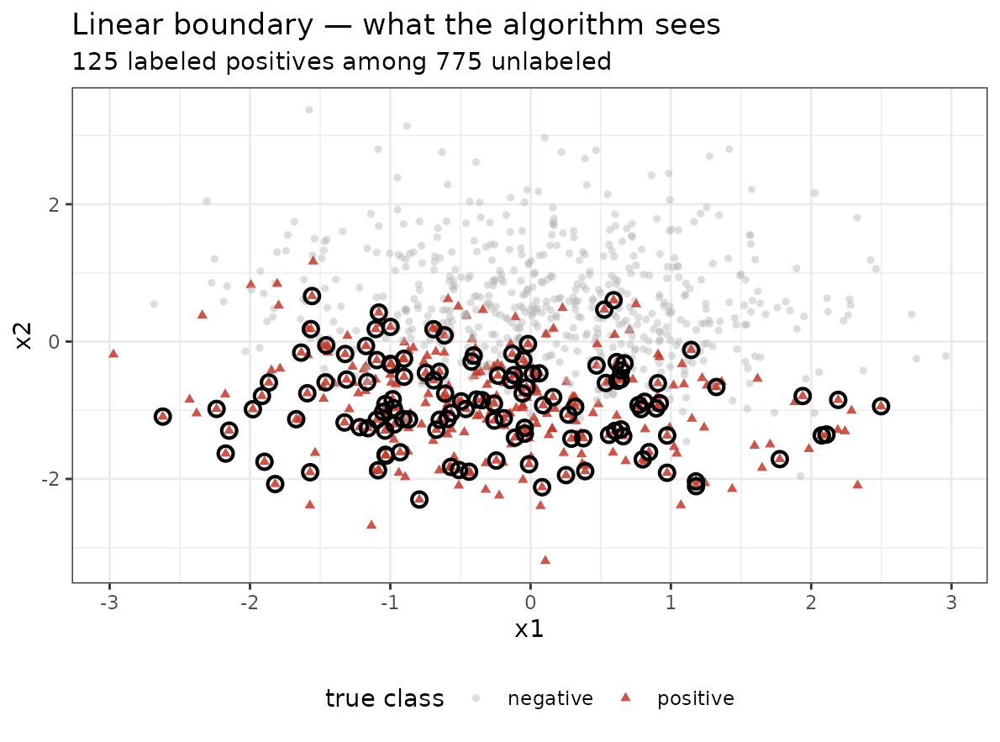
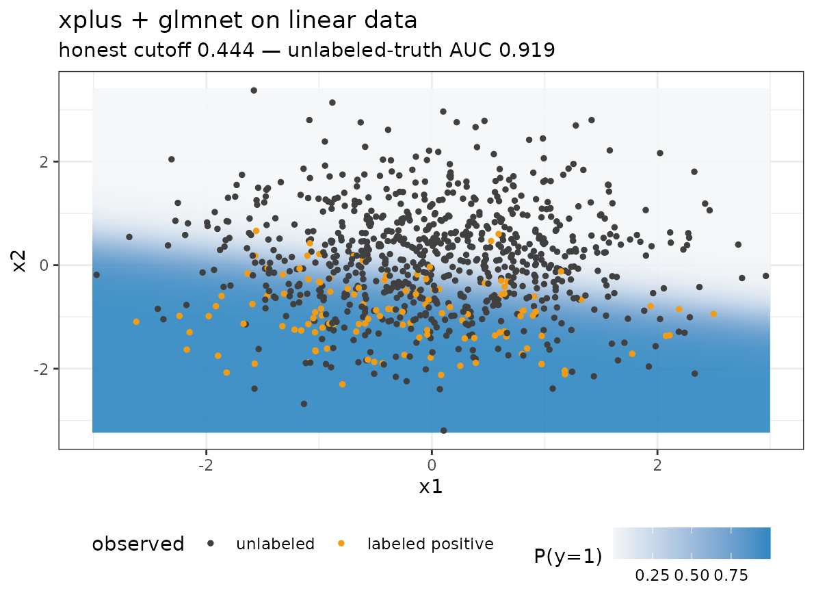
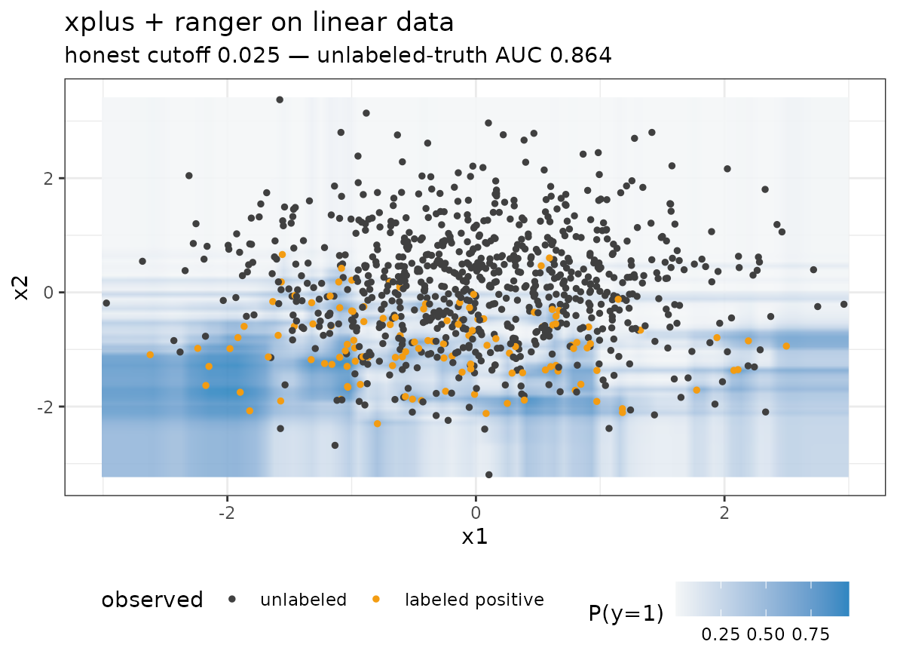
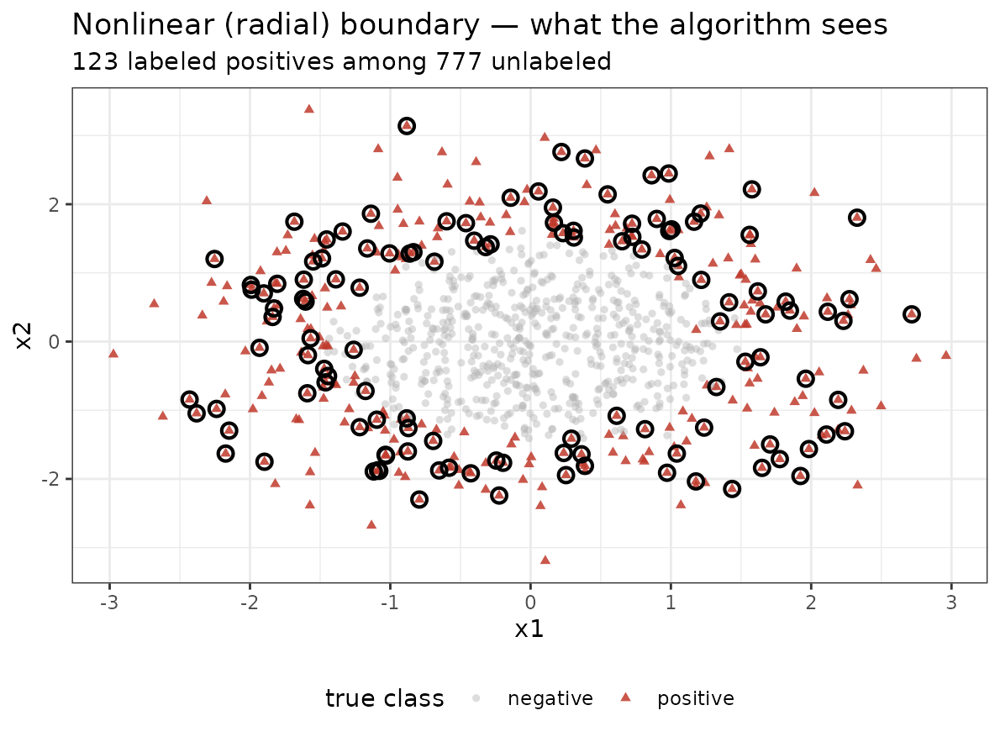
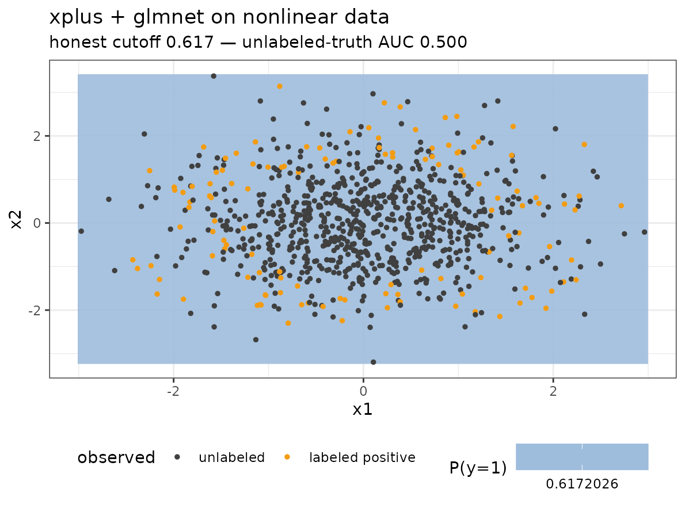
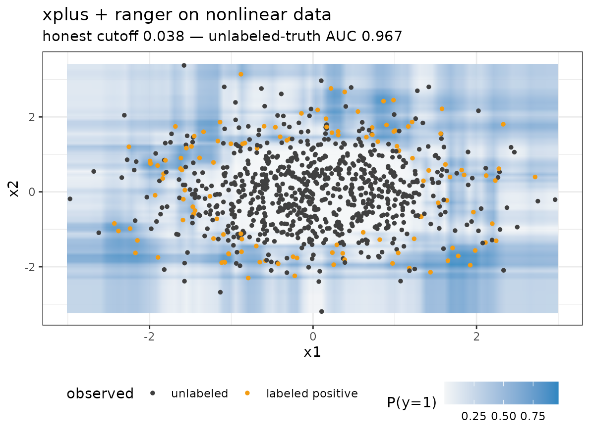

The backend swap is easier to appreciate when you can see it. This article builds two two-dimensional PU problems — a linear boundary and a nonlinear ring — labels only a fraction of the positives under SCAR, and compares the probability surface each backend learns from the same labeled positives plus a sea of unlabeled points.
library(xplus)
library(ggplot2)
sim_lin <- simulate_pu_data(n = 900, p = 2, boundary = "linear",
prevalence = 0.35, label_propensity = 0.35,
n_informative = 2, sharpness = 6, seed = 7)
sim_rad <- simulate_pu_data(n = 900, p = 2, boundary = "nonlinear",
prevalence = 0.35, label_propensity = 0.35,
n_informative = 2, sharpness = 6, seed = 7)Each simulation returns the observed PU labels y, the
hidden truth z (used only for evaluation), and the feature
matrix. About a third of the true positives are labeled — everything
else, including the remaining positives, sits in the unlabeled
cloud:
points_df <- function(sim) {
data.frame(
x1 = sim$x[, 1], x2 = sim$x[, 2],
truth = factor(sim$z, levels = 0:1, c("negative", "positive")),
observed = factor(sim$y, levels = 0:1, c("unlabeled", "labeled positive"))
)
}
plot_observed <- function(sim, boundary) {
d <- points_df(sim)
ggplot(d, aes(x1, x2)) +
geom_point(aes(color = truth, shape = truth, alpha = truth), size = 1.3) +
geom_point(data = subset(d, observed == "labeled positive"),
color = "black", shape = 21, size = 2.4, stroke = 1.1) +
scale_color_manual(values = c(negative = "grey70", positive = "#C0392B")) +
scale_alpha_manual(values = c(negative = 0.45, positive = 0.85)) +
labs(title = paste(boundary, "boundary — what the algorithm sees"),
subtitle = sprintf("%d labeled positives among %d unlabeled",
sum(sim$y), sum(sim$y == 0)),
color = "true class", shape = "true class", alpha = "true class",
x = "x1", y = "x2") +
theme_bw(base_size = 11) +
theme(legend.position = "bottom")
}Linear boundary
Circled points are the only supervision the model gets — labeled positives drawn from the true positive class; the ring below is never revealed:
plot_observed(sim_lin, "Linear")
Now we fit xplus() with two backends and project each
fitted model over a dense grid. Blue depth is the predicted
P(y = 1); orange points are the labeled positives, grey
ones the unlabeled pool:
surface_df <- function(sim, backend, res = 80) {
fit <- xplus(sim$x, sim$y, backend = backend, max_iter = 20,
seed = 1, nfolds = 5)
gx <- seq(min(sim$x[, 1]), max(sim$x[, 1]), length.out = res)
gy <- seq(min(sim$x[, 2]), max(sim$x[, 2]), length.out = res)
g <- expand.grid(gx, gy)
names(g) <- colnames(sim$x)
g$prob <- as.numeric(predict(fit, newx = as.matrix(g[, colnames(sim$x)])))
names(g)[1:2] <- c("V1", "V2")
list(fit = fit, grid = g)
}
plot_surface <- function(sur, sim, backend, boundary) {
d <- points_df(sim)
unl <- sim$y == 0
score <- auc(sim$z[unl], as.numeric(predict(sur$fit))[unl])
ggplot(sur$grid, aes(V1, V2)) +
geom_raster(aes(fill = prob), alpha = 0.9, interpolate = TRUE) +
geom_point(data = d, aes(x1, x2, color = observed), size = 1) +
scale_fill_gradient(low = "#F4F6F7", high = "#2E86C1", name = "P(y=1)") +
scale_color_manual(values = c(unlabeled = "grey25",
`labeled positive` = "#F39C12")) +
labs(title = sprintf("xplus + %s on %s data", backend, boundary),
subtitle = sprintf("honest cutoff %.3f — unlabeled-truth AUC %.3f",
sur$fit$cutoff, score),
color = "observed", x = "x1", y = "x2") +
theme_bw(base_size = 11) +
theme(legend.position = "bottom")
}
sur_lin_glm <- surface_df(sim_lin, "glmnet")
plot_surface(sur_lin_glm, sim_lin, "glmnet", "linear")
sur_lin_ran <- surface_df(sim_lin, "ranger")
plot_surface(sur_lin_ran, sim_lin, "ranger", "linear")
Both backends recover the sloped boundary — glmnet a crisp linear ramp, ranger a blockier forest version — from the same 125 labeled positives.
Nonlinear boundary
The ring problem is the opposite regime: positives surround a negative core, so no linear separator exists.
plot_observed(sim_rad, "Nonlinear (radial)")
sur_rad_glm <- surface_df(sim_rad, "glmnet")
plot_surface(sur_rad_glm, sim_rad, "glmnet", "nonlinear")
glmnet returns an essentially flat map — AUC 0.500, no better than chance — because a logistic plane cannot express a ring. The PU wrapper does not rescue a learner that cannot represent the boundary.
sur_rad_ran <- surface_df(sim_rad, "ranger")
plot_surface(sur_rad_ran, sim_rad, "ranger", "nonlinear")
ranger paints the donut back in: a darker low-probability core inside a brighter positive ring, reaching unlabeled-truth AUC ≈ 0.97 from the same sparse supervision.
Takeaway
Same PU problem, same labels — the only thing that changed is the
learner. That is the entire point of the multimodel API: PU performance
is bounded by the geometry the backend can express, so the learner
should be chosen empirically (xplus_grid() /
pu_score()) rather than assumed. The honest stored
predictions make that comparison valid without touching the hidden
negatives.